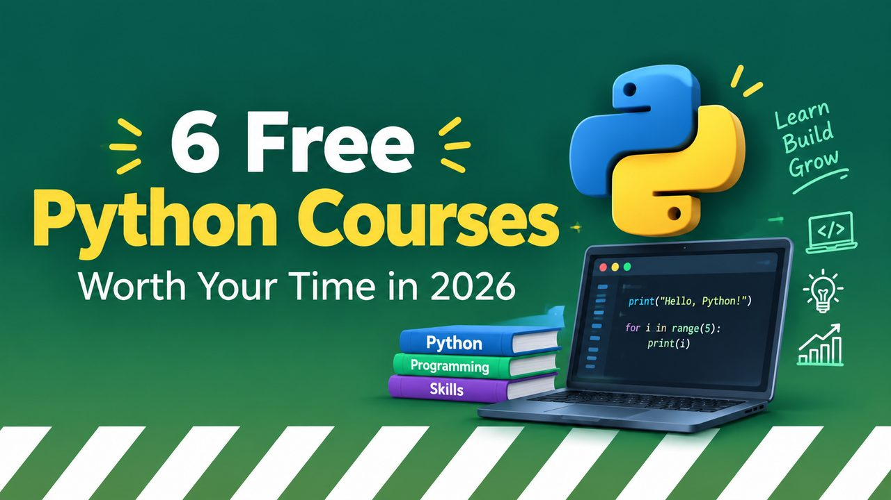

6 Free Python Courses Worth Your Time in 2026
There are hundreds of free Python courses online. Most of them are bad — outdated, shallow, or stuck in 2014-era style "let's print Hello World for an hour." This guide is six courses that survive real scrutiny: current, well-paced, and that get you to building real projects quickly.

The picks below are ordered from absolute beginner to intermediate, with one shortcut for people who already know some Python and just want to round out their skills. Each entry includes the format (video / interactive / reading), pacing, and what you'll be able to build after finishing.
1. Python.org Official Tutorial
#1 BeginnersThe official Python tutorial, written by the Python Software Foundation. It's not flashy. There are no videos, no gamified progress bars, no "build a Netflix clone in 30 minutes." It is, however, the single most accurate source of Python fundamentals that exists — and it's been kept current for 25 years.
The catch: it's dry. If reading dense technical documentation is your thing, start here. If not, use it as a reference while you work through one of the more interactive courses below.
Why it's #1: It's the only Python course in the world that the Python core team itself maintains. Every concept is correct, every example is current, and every link inside it still works.
2. Automate the Boring Stuff with Python
#1 PracticalAl Sweigart's classic, freely readable online at automatetheboringstuff.com. The premise is exactly what most people who start learning Python actually want to do: automate tedious computer tasks. Renaming files, scraping web pages, working with spreadsheets, sending emails.
Each chapter is a self-contained project. By the end of chapter 6 you'll have written a script that does something useful on your own computer. By chapter 12 you'll be writing web scrapers. By chapter 18 you'll be controlling the mouse and keyboard to automate GUI programs.
Why it's #1 for practical: It teaches Python through problems you actually have, not through textbook examples. You finish with a portfolio of small working tools.
3. freeCodeCamp — Python Certification
#1 InteractivefreeCodeCamp's Python curriculum is a series of browser-based exercises. You read a short lesson, then write code in the embedded editor to solve a series of challenges. The 300-hour curriculum covers Python fundamentals, then loops, functions, object-oriented programming, and a series of certification projects.
If you're the kind of learner who drifts when reading, this is the course for you. The challenges are bite-sized (3–10 minutes each), so you always have a sense of progress.
Why it's #1 for interactive: No setup, no installs, no "what is a terminal" — you write code in the browser and immediately see if it works. Great for total beginners.
4. CS50P — Introduction to Programming with Python
#1 College-styleHarvard's CS50 Python edition. David Malan is one of the best lecturers in computer science, and CS50P is the course that turned thousands of people from "I've heard of Python" into "I write Python in my job." It is more rigorous than the other picks here — expect real problem sets, real feedback, and concepts like list comprehensions explained as if you were going to actually use them.
If you have the time and want a real understanding of the language rather than just enough to copy-paste Stack Overflow answers, this is the one to commit to.
Why it's #1 college-style: It teaches you to think like a programmer, not just to memorise syntax. The problem sets are actually interesting.
5. Real Python (free articles + courses)
Best for: skill-specific learningReal Python is less a single course and more an ongoing reference library. Thousands of articles on specific topics — async/await, type hints, decorators, pandas, testing. The articles are short (10-20 min each), accurate, and come with runnable code.
There's a paid tier with longer courses and video walkthroughs, but the free articles cover 80% of what most people need. If you already know the basics and want to level up on a specific skill, Real Python is the first place to look.
6. Kaggle Learn — Python & Pandas track
Best for: data science focusKaggle's micro-courses are short, focused, and run in your browser. The Python track gets you from "no Python" to "I can load a CSV, clean it, plot it, and run a basic model" in a single weekend. The pandas track is widely cited as the single best introduction to working with tabular data in Python.
No certificate, no community, no fluff. Just exercises in a notebook with the data right there.
What I'd actually do
A 90-day plan if you're starting from zero
Days 1–7: freeCodeCamp's Python curriculum. Get the fundamentals in. Don't move on until you can write a function without looking up the syntax.
Days 8–30: Automate the Boring Stuff, chapters 1–6. You're now writing scripts that do real things on your computer.
Days 31–60: Pick one side project from our list of beginner Python projects, finish it, ship it somewhere. Doesn't matter where. The act of finishing is the point.
Days 61–90: Pick a course from Kaggle, Real Python, or CS50P based on your goal (data, web, theory). Go deep.
The mistake people make is staying on the "tutorial treadmill" — course after course, never building anything original. The first 90 days should end with something you've made.
What about paid courses?
Paid Python courses are sometimes worth it — they tend to have better pacing, more support, and more polished projects. But none of them teach anything you can't learn for free with the six sources above plus consistent practice. The two best reasons to pay for a course are: you learn better with deadlines (a paid cohort forces you to keep up), or you want a certificate on LinkedIn. Otherwise, the free tier is genuinely enough.

RDJ Publishers
Independent web studio publishing free guides, tutorials and tools since 2026.